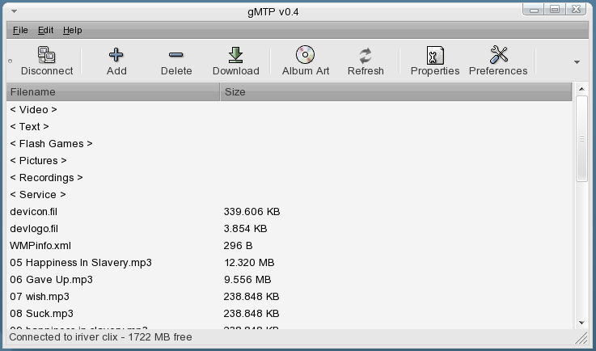
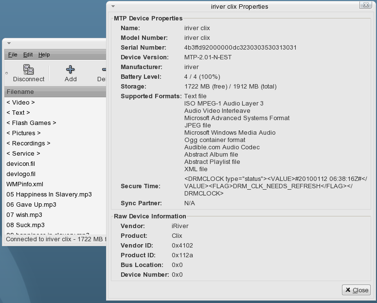
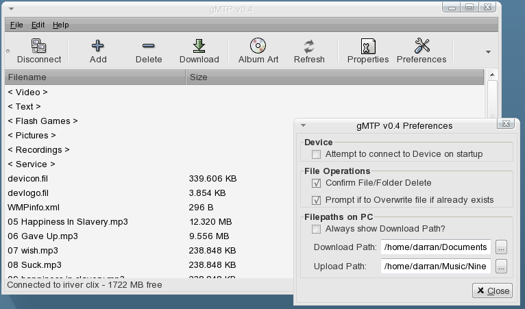
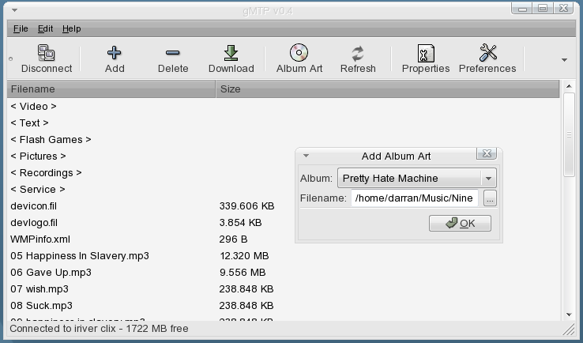
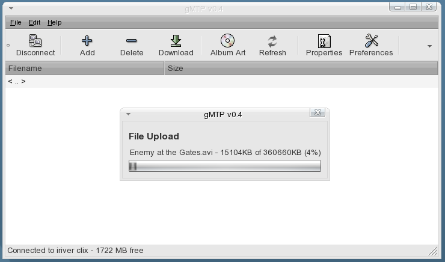

Darran Kartaschew (aka Chewy509).
Released under the CDDL License. 2009,2010.
Due to Oracle Solaris 10 not having a native MTP based MP3 player support application, I've written my own GUI client for MTP devices. It is very simple, only supporting upload, download and removal of files as needed. gMTP supports metadata for MP3, FLAC, WMA and OGG audio files, ensuring correct track information on your media player when uploading audio file. For other needs like ripping from CDs, managing your audio collection, playlist support, I suggest you look at Gnomad2 or another MTP client. (Playlist support however is planned).
Download the libmtp source code, unpack and run: $ INSTALL=/usr/ucb/install MAKE=gmake ./configure
Note: If you don't have a libusb.pc file (configure complains about libusb being missing), then you can use this
one. Copy to /usr/lib/pkgconfig/libusb.pc.
Then normal make and make install routine.
Once installed, test the mtp package by connecting your MP3 player, and run mtp-detect from a commandline.
If all is well, you should see your device details scroll across the screen.
Download the libid3tag source code, unpack and run: $ INSTALL=/usr/ucb/install MAKE=gmake ./configure
Then normal make and make install routine.
copy id3tag.pc to /usr/local/lib/pkgconfig/id3tag.pc
Download the FLAC source code, unpack and run: $ INSTALL=/usr/ucb/install MAKE=gmake ./configure
Then normal make and make install routine.
Download and unpack the source code, and run the normal make and make install routine.
run gMTP to start the appication. Feel free to add a launcher to the JDS menu as needed.
Note: For Solaris10/OpenSolaris, the default makefile assumes you have SunStudio 12 installed. If you don't then modify the make file to use gcc instead. All other OSes will use gcc as default.
gMTP Source: gMTP-0.7-i386.tar.gz
gMTP Solaris 10 Package: gMTP-0.7-i386.pkg.gz (Warning: Does NOT contain libmtp, libflac or libid3tag).
run gmtp. Use the Toolbar buttons for various functions. Files surrounded by "< .. >" are folders, double click to enter. Double clicking
a file, will download it. Use the Preferences to set upload and download paths. (Note: the last upload/download path is saved when you exit the application).
Drag'n'Drop support is enabled for uploading files to the device. Simply drop the desired files/folder into gMTP to upload the files/folders to the device.
Q. What is MTP?
A. MTP = Media Transfer Protocol. MTP has been adopted by most major MP3 and Mobile Phone manufacturers as the
method of talking to devices to upload/download files to/from a PC.
See Media Transfer Protocol for more information.
Q. Why does't gMTP support my iPod or Creative Nomad player
A. These devices do not use MTP for moving data to/from a device. Apple iPod uses it's own custom protocol
in additional to USB Mass Storage and Creative devices use NJB.
Q. I have a MTP enabled device and it is connected to my PC, but it doesn't get detected by gMTP?
A. Most devices are capable of using different modes to talk to your PC, so ensure that the device is in MTP mode.
A. Or, libmtp doesn't know about your device or how to handle it correctly. Run $ mtp-detect to see
if it can be found.
Q. I get asked which storage device to connect to when I connect to my mobile phone?
A. Some devices (notably mobile phones), have both internal storage (non-removable) and external storage (removable
storage) in the form of a micro-SD card or M2 card, and gMTP will treat these as different storage devices.
Q. Does gMTP support Albums and uploading Album Art?
A. Yes. Album data is autocreated/updated when you upload a MP3 (or other supported audio file) by using information
contained within the audio file, eg. Using the ID3 Tag information in an MP3 file. Once the Album has been created,
you can upload the album art via the Edit / Add Album Art menu option.
Q. Will this software work on OpenSolaris, Linux, *BSD or other POSIX Operating System
A. I have reports that it runs successfully on OpenSolaris, Arch Linux, Debian and Ubuntu.
Q. What about SPARC, ARM or other non-x86 systems?
A. It should work fine but is untested. (If libmtp and libid3tag work fine on your platform, then gMTP should as well).
Q. Do I need root access to use gMTP?
A. On Solaris 10, in general No. (If you do need root access, then double check your RBAC setup for your user then). On Linux, in general No, as libmtp
should have set your udev rules correctly for libmtp known devices.

Default interface gMTP

Device Properties

gMTP Preferences

Album Art

File Upload to Device